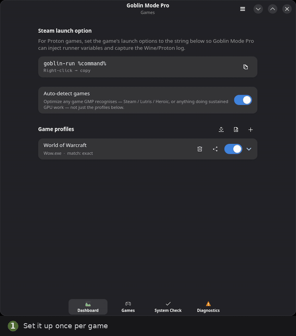

A one-switch performance optimizer for Linux gaming. Automatically tunes the CPU governor, process priority, Wayland tearing, VRR, and TDP power limits while you play — and reverts 100% of them the instant you quit.

performance → Diagnostics watches 1%-low regressions → zero-leak revert on exit.
Stock Linux distributions ship with power-saving defaults for laptops on battery. Goblin Mode Pro gives your games complete hardware priority.
Locks the CPU scaling governor to performance and sets Energy Performance Preference to maximum responsiveness. Eliminates micro-stutter from clocks waking up a beat too late.
Elevates game processes and children to nice -10. Background indexers, browser tabs, or package managers are forbidden from preempting your primary rendering thread.
Raises Intel RAPL power limits (PL1/PL2) and triggers AMD ryzenadj TDP profiles during game sessions to stop aggressive power-throttling on gaming laptops and handhelds.
Automates Wayland compositor knobs: enables allow_tearing on Hyprland for competitive zero-latency frame presentation and engages Variable Refresh Rate per output.
Follows live MangoHud logs to catch severe frame rate dips (>30% drop in 1% lows) and thermal throttling events (90°C+). Parses Proton logs for DXVK crashes and missing DLLs.
Automated TelemetryThe core guarantee: every governor, EPP, RAPL, or compositor setting is captured in a snapshot prior to tuning, and restored 100% cleanly when the game quits or the daemon stops.
Zero State LeakageDeliberate security boundaries: the daemon and GUI run completely unprivileged. Privileged writes are mediated by an auditable root helper with a frozen D-Bus contract.
Least-Privilege SecurityCore process table scanning, scheduling decisions, and root helper operations ported to statically-linked Rust (gmp-core, gmp-helper) for sub-millisecond responsiveness.
MangoHud shows you the numbers; Mission Center shows you the system. Goblin Mode Pro bridges the gap by actually acting on both.
| Feature / Capability | Stock Linux | Feral GameMode | Goblin Mode Pro |
|---|---|---|---|
| Auto-Detect Games | ❌ None | ⚠️ Requires wrapper / LD_PRELOAD | ✅ Automatic (/proc & Wrappers) |
| CPU Governor & EPP Lock | ❌ powersave / balance | ⚠️ Governor only (no EPP) | ✅ Governor + EPP (both drivers) |
| Process Renice (-10) | ❌ nice 0 (default) | ✅ Yes | ✅ Yes (Game & child processes) |
| Intel RAPL & AMD Ryzen TDP | ❌ Stock firmware cap | ❌ Not supported | ✅ PL1/PL2 & ryzenadj TDP |
| Wayland Tearing & VRR Control | ❌ Manual toggles | ❌ Not supported | ✅ Automated per-game Wayland hooks |
| Real-Time FPS Watchdog | ❌ None | ❌ None | ✅ MangoHud 1%-low regression alerts |
| Proton & DXVK Crash Analysis | ❌ Manual log grepping | ❌ None | ✅ Plain-language incident parser |
| System & Kernel Pre-Flight Check | ❌ Silent crashes | ❌ None | ✅ 12+ checks with one-click fixes |
| Desktop GUI Dashboard | ❌ None | ❌ CLI / Config file only | ✅ Modern GTK4 / Libadwaita App |
| Snapshotted Zero-Leak Reverts | ❌ N/A | ⚠️ Basic restore | ✅ Cryptographic state snapshots |
Built from day one with a strict security boundary. No ambient root permissions, zero arbitrary shell commands.
Runs unprivileged inside your user desktop session. Continuously polls the process table, computes target performance states, and communicates via D-Bus.
The only privileged code. Strictly authorized by PolicyKit rules. Validates inputs against strict kernel sysfs allowlists and handles RAPL, EPP, and governor writes.
The boundary between the daemon and root helper is a frozen introspection contract, verified in tests across both Python and statically-compiled Rust implementations.
Every feature exposed by the GTK4 GUI is accessible via goblin-mode-pro-cli over the standard session bus.
Explore full guides covering launcher setup, per-game configuration, benchmark methodology, and hardware verification.
Installation from Arch AUR, Flatpak, Debian/Ubuntu, or source, and your first 60-second wizard setup.
Deep dive into CPU governors, priority renice, sched_ext, RAPL power limits, and Wayland VRR switches.
Understanding the frame-rate watchdog, automated regression tracking, and Proton crash log parser.
Complete flag reference for goblin-mode-pro-cli for headless scripts, SSH, and batch testing.
Module breakdown, process privilege separation, D-Bus interfaces, and runner variable injection.
Quick fixes for ananicy conflicts, hardened kernel user namespaces, esync limits, and KDE icon caching.
Tested Intel Core, AMD Ryzen APUs, NVIDIA PowerMizer configurations, and Steam Deck verification.
Clear explanations of governors, EPP, RAPL, TDP, VRR, Wayland tearing, split-lock, and sched_ext.